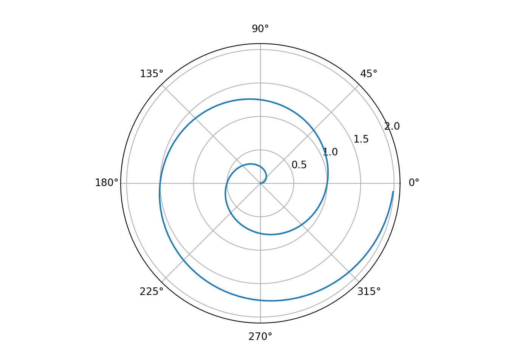
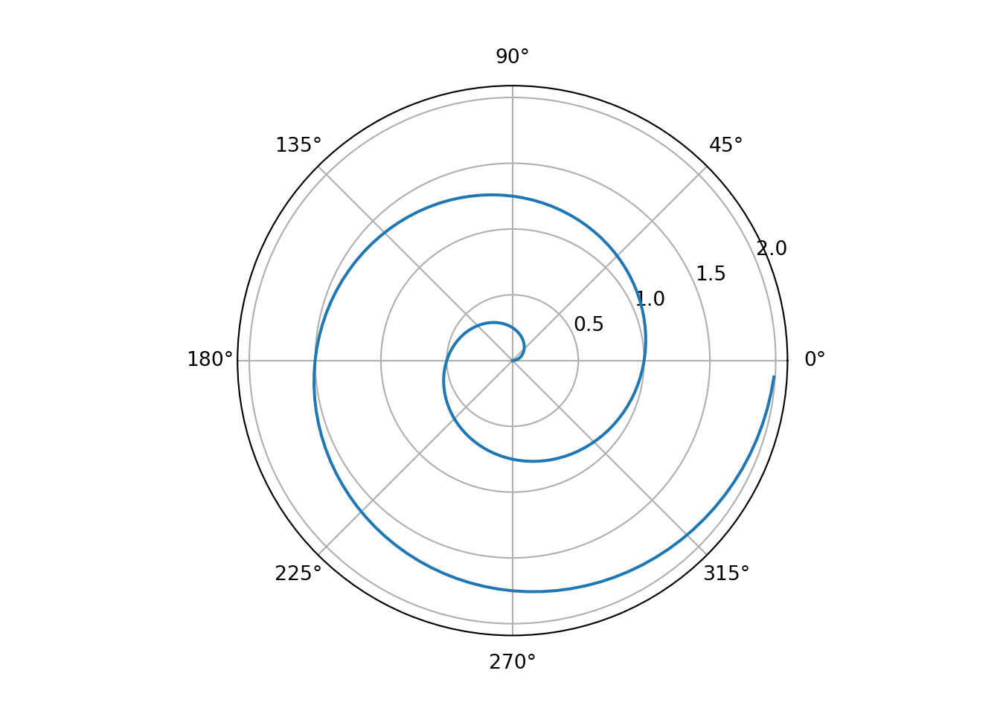

Code
import numpy as np
import matplotlib.pyplot as plt
r = np.arange(0, 2, 0.01)
theta = 2 * np.pi * r
fig, ax = plt.subplots(
subplot_kw = {'projection': 'polar'}
)
ax.plot(theta, r)
ax.set_rticks([0.5, 1, 1.5, 2])
ax.grid(True)
plt.show()
111
import numpy as np
import matplotlib.pyplot as plt
r = np.arange(0, 2, 0.01)
theta = 2 * np.pi * r
fig, ax = plt.subplots(
subplot_kw = {'projection': 'polar'}
)
ax.plot(theta, r)
ax.set_rticks([0.5, 1, 1.5, 2])
ax.grid(True)
plt.show()
from IPython.display import display, Markdown
radius = 10
display(Markdown("""
The radius of the circle is {radius}.
""".format(radius = radius)))<IPython.core.display.Markdown object>#| echo: true
#| standalone: true
#| viewerHeight: 300
#| components: [editor, viewer]
#| layout: vertical
from shiny import App, reactive, render, ui
############################################
app_ui = ui.page_fluid(
ui.input_slider("x", "Choose a number", 1, 100, 50),
ui.output_text_verbatim("txt1"),
)
############################################
def server(input, output, session):
@reactive.Calc
def x_times_2():
val = input.x() * 2
print(f"Running x_times_2(). Result is {val}.")
return val
@output
@render.text
def txt1():
return f'x times 2 is: "{x_times_2()}"'
############################################
app = App(app_ui, server)
This is important
This is an example of a ‘folded’ caution callout that can be expanded by the user. You can use collapse="true" to collapse it by default or collapse="false" to make a collapsible callout that is expanded by default.
This is an example of a callout with a caption.
Note that there are five types of callouts, including:
note, warning, important, tip, and caution.
#| standalone: true
#| components: [editor, viewer]
#| layout: vertical
from shiny import ui, render, App, reactive
from matplotlib import pyplot as plt
import pandas as pd
import jinja2
choices = {"a": "Choice A", "b": "Choice B"}
app_ui = ui.page_fluid(
ui.input_slider("x", "Choose a number", 1, 100, 50),
ui.input_checkbox("x1", "Checkbox"),
ui.input_numeric("x1", "Number", value=10),
ui.input_slider("x2", "Slider", value=10, min=0, max=20),
ui.input_text("x1", "Text", placeholder="Enter text"),
ui.input_text_area("x2", "Text area", placeholder="Enter text"),
ui.input_password ("x3", "Password", placeholder="Enter password"),
ui.input_select("x1", "Select", choices),
ui.input_checkbox_group("x2", "Checkbox group", choices),
ui.input_radio_buttons("x3", "Radio buttons", choices),
ui.input_date("x9", "Date input"),
ui.input_date_range("x10", "Date range input"),
ui.output_text("my_cool_text"),
ui.output_text_verbatim("a_code_block"),
ui.output_table("a_data_frame"),
ui.output_plot("a_scatter_plot"),
ui.output_ui("some_html"),
ui.output_text_verbatim("txt1")
)
def server(input, output, session):
@output
@render.text
def my_cool_text():
return "hello, world!"
@output
@render.text
def a_code_block():
# This function should return a string
return str([1, 2, 3, 4, 5])
@output
@render.table
def a_data_frame():
df = pd.DataFrame({"x": [1,2,3]})
return df
@output
@render.plot
def a_scatter_plot():
return plt.scatter([1,2,3], [5, 2, 3])
@output
@render.ui
def some_html():
return ui.HTML("<marquee>hello, world!</marquee>")
@reactive.Calc
def x_times_2():
val = input.x() * 2
print(f"Running x_times_2(). Result is {val}.")
return val
@output
@render.text
def txt1():
return f'x times 2 is: "{x_times_2()}"'
app = App(app_ui, server)| Planet | R (km) | mass (x 10^29 kg) |
|---|---|---|
| Sun | 696000 | 1.9891e+09 |
| Earth | 6371 | 5973.6 |
| Moon | 1737 | 73.5 |
| Mars | 3390 | 641.85 |
Cited Year ... Study Type Title
0 41 2013 ... Field Determination of scoured bridge natural freque...
1 84 2015 ... FE, model An investigation into the effect of scour on t...
2 80 2012 ... Field Vibration-Based Method and Sensor for Monitori...
3 9 2020 ... Centrifuge Assessment of bridge natural frequency as an i...
4 3 2020 ... Field Study on Dynamic Behavior of Bridge Pier by Im...
5 0 2022 ... Field Influence of soil properties on the shift in n...
6 1 2020 ... FE Scour Risk Assessment of Offshore Wind Turbine...
7 0 2022 ... 3D FE, LSTM Natural Frequency Degradation Prediction for O...
8 4 2020 ... FE Closed Form Solutions for Predicting Lateral R...
9 51 2014 ... Centrifuge Investigation of Monotonic and Cyclic Behavior...
10 2 2021 ... Centrifuge Centrifuge Modeling for the Evaluation of the ...
11 6 2020 ... FE, Field Dynamic Characteristics of an Offshore Wind Tu...
12 45 2017 ... Centrifuge Centrifuge modeling of lateral bearing behavio...
13 10 2020 ... Centrifuge Centrifuge modelling of drained pullout and co...
14 18 2019 ... Centrifuge Suction caisson foundations for offshore wind ...
[15 rows x 6 columns]